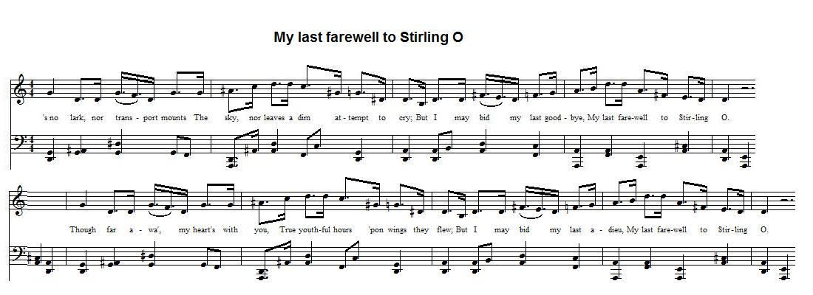

My last farewell to Stirling
Mon dernier adieu à Stirling
author unknown

Tune - Mélodie
from the "Tobar an Dualchais" site: as sung by Alexander McMillan-McShannon in 1956
Sequenced by Christian Souchon
|
To the tune:
As sung by Willie Mathieson (1879 - 1958, born in Ellon), a Banffshire farm servant and a folk song collector who gathered an important corpus of songs, now deposited in MS form in the "School of Scottish Studies" archives. He heard the song at a meal-and-ale [harvest celebration] at Drakemyre. The folksong collector and playwright Gavin Greig (1856 - 1914, a remote relative of Edvard Grieg's) says the tune he has collected bears some resemblance to the strathspey 'The Tinkers' Waddin'. To the lyrics: Like the foregoing, the present song has no explicit Jacobite import. As stated in the Wikipedia article on Tasmania, "the penal settlement of Van Diemen's Land (named by explorer Abel Tasman in honour of Dutch colonial governor Anthony van Diemen) was founded in 1803 by the British Empire to forestall any claims to the land by French explorers during the Napoleonic Wars." If the man who bids goodbye to Stirling, his lover and his family, when leaving for Van Diemen's Land to serve there a forty-year sentence, was, for sure, no Jacobite, his fate was similar to that of many of his elder countrymen who were transported to American plantations on account of their Jacobite sympathies. |
A propos de la mélodie:
Elle reproduit le chant interprété par Willie Mathieson (1879 - 1958, né à Ellon), garçon de ferme dans le Banffshire et collecteur de chants traditionnels qui réunit un important corpus, désormais conservé sous forme manuscrite par la "School of Scottish Studies". Il entendit chanter ce morceau lors d'un "meal-and-ale" [banquet de moissonneurs] à Drakemyre. Le folkloriste et dramaturge Gavin Greig (1856 - 1914, parent éloigné d'Edvard Grieg) affirme que la mélodie qu'il a recueillie ressemble un peu au strathspey 'Les noces du romanichel'. A propos des paroles: Comme le précédent, le présent chant n'a pas de lien direct avec le Jacobitisme. Selon l'article Wikipedia sur la Tasmanie, "la colonie pénitentiaire de Van Diemen's Land (du nom donné par l'explorateur Abel Tasman en honneur du gouverneur colonial néerlandais Anthony van Diemen) fut fondée en 1803 par les Anglais pour prévenir toute revendication territoriale de la part des Français pendant les guerres napoléoniennes." Si l'homme qui fait ses adieux à Stirling, sa bienaimée et sa famille, alors qu'il part pour le Van Diemen's Land purger une peine de 40 ans de travaux forcés, n'était en aucun cas un Jacobite, son destin était fort semblable à celui de tant de ses aînés qui furent déportés dans les plantations d'Amérique en raison de leurs sympathies jacobites. |

|
MY LAST ADIEU TO STIRLING
1. 's no lark 'n our transport mounts the sky Nor leaves a dim attempt to cry; But I may bid my last goodbye, My last farewell to Stirling O. Chorus: Though far awa', my heart's with you, True youthful hours 'pon wings they flew; But I may bid my last adieu, My last farewell to Stirling O. 2. Nae mair I'll meet her in the dark, Nor gang wi her to the king's park; Nor scare the hare out 'fairest flap, When I am far from Stirling O. 3. Nae mair I'll meet her in the glen And stab the roosting pheasant hen; Nor scare the rabbits frae their den, When I am far from Stirling O. 4. For now ye know that I am bound For forty years t' Van Dieman's Land; I won't ignore all what I've done, When I am far from Stirling O. 5. There's one request before I go, Onto ye all my comrades all; My gun and dog to keep for me, When I am far from Stirling O. 6. Now fare ye weel my Jeannie dear, For me you shed a bitter tear; And I hope you'll soon find 'nother dear, When I am far from Stirling O. 7. Though far awa my heart's wi' you, Our youthful hours 'pon wings they flew; But I will bid a last adieu, My last fareweel tae Stirling O. |
DERNIER ADIEU A STIRLING
1. Ni vols d'oiseaux, ni doux arpèges Pour accompagner le cortège; Mais je te dois le privilège, D'un dernier adieu, Stirling, O. Refrain: "Loin des yeux, loin du cœur?" Sottise! Je sais, moi, que le temps attise Des jours passés les cendres grises. Mon dernier adieu, Stirling, O. 2. Finis les rendez-vous nocturnes, Au Parc du Roi, au clair de lune; La traque au lièvre dans les dunes, Quand j'aurai quitté Stirling, O. 3. Je ne verrai plus ma compagne. Ne chasserai plus la faisane Ni les lapins dans la garenne, Quand j'aurai quitté Stirling O. 4. J'ai mérité qu'ils me condamnent A ces quarante années de bagne. Mais le Pays de Van Dieman C'est si loin d'ici, Stirling O. 5. Ecoutez l'ultime requête, Camarades, qui vous est faite; Gardez mon chien, mon escopette, Quand j'aurai quitté Stirling O. 6. Adieu ma Jeannette chérie, Quand tes larmes seront taries Retrouve vite une âme amie, Quand j'aurai quitté Stirling O! 7. Bien que je parte, mon cœur reste, Fuyez, heures de ma jeunesse! Entends l'adieu que je t'adresse, Mon dernier adieu, Stirling O. Traduction Christian Souchon (c) 2015 |